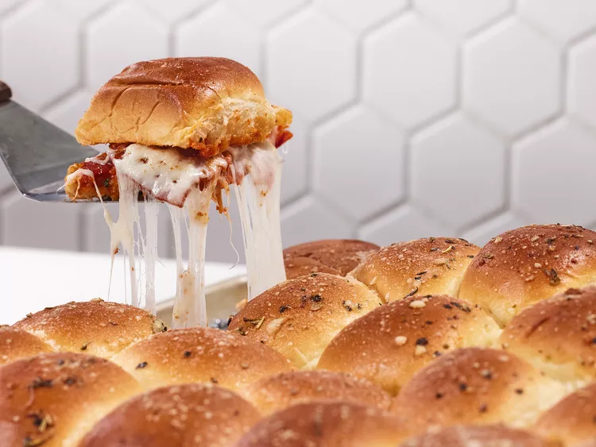

Pizza Sliders

Square of a pizza slider with melting cheese
These sliders really taste like pizza (as they should) but with a hint of sweetness from the Hawaiian rolls.
Trying to separate them can get messy but they are absolutely delicious.
Ingredients
- cooking spray
- 1 ½ cups (6 oz.) finely pre-shredded low-moisture part-skim mozzarella cheese
- 1 cup (about 3 1/2 oz.) finely pre-shredded Italian cheese blend
- ¼ cup finely chopped fresh basil
- ¼ teaspoon black pepper
- 2 teaspoons dried Italian seasoning, divided
- 1 ⅓ cups pizza sauce (from 1 [13-oz.] jar)
- 2 tablespoons sun-dried tomato pesto
- 1 (12 count) package Hawaiian sweet rolls
- ¾ cup (about 3 oz.) thinly sliced pepperoni
- 2 tablespoons unsalted butter
- 1 tablespoon grated Parmesan cheese
- ¾ teaspoon garlic powder
Steps
- Preheat the oven to 375 degrees F (190 degrees C). Line a rimmed baking sheet with parchment, and place a
cooling rack on baking sheet. Spray rack with cooking spray.
- Stir together mozzarella, Italian cheese blend, basil, pepper, and 1 1/2 teaspoons of the Italian seasoning
in a small bowl until combined. Set aside.
- Stir together pizza sauce and pesto in another small bowl. Set aside.
- Without separating the individual rolls, cut the entire slab of rolls in half horizontally using a serrated
knife. Place bottom layer of rolls on the prepared baking sheet. Set top layer of rolls aside.
- Sprinkle bottom layer of rolls evenly with half of the cheese mixture; top evenly with half of pepperoni and
half of the sauce. Repeat layers once.
- Bake in the preheated oven until cheese melts, about 15 minutes.
- Meanwhile, combine butter, Parmesan, garlic powder, and remaining 1/2 teaspoon Italian seasoning in a small
saucepan; cook over medium, stirring occasionally, until butter melts, 1 to 2 minutes. Set aside.
- Remove rolls from oven, and add top layer of rolls; brush top of rolls evenly with butter mixture. Return to
preheated oven, and bake until rolls are golden brown and crisp, about 5 minutes. Separate the rolls, and
serve immediately.
Main Page